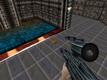
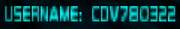
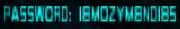
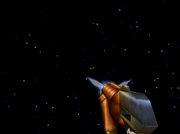
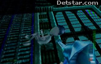
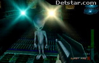
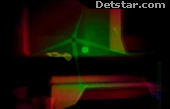
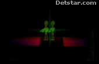
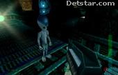
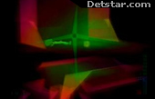

|
| Mysteres
de Perfect Dark : Vaisseau Skedar |
| Collier
de Cassandra |
| Lorsque
Cassandra de Vries se fait assassiner, vous trouverez son Collier.
En regardant dans l'Inventaire, vous verrez défiler son Username
et son Password. Les voici. Je ne me rappelle plus trop quand se déroule
l'Histoire mais la Date de Naissance de Cassandra de Vries semble
crédible. Il y a aussi le Truc de Ozymandias ! Lisez ci-dessous
! |



 |
Cassandra De Vries 780322 = 22 Mars 1978 |
 |
Ozymandias, voir ci-dessous ! |
 |
Ozymandias
est un Nom qu’on retrouve dans 2 Trucs : Un Poème de Mary
Shelley (qui a écrit Frankenstein entre autres) et dans la Trilogie
des Tripodes, de John Christopher. Dans les Deux Cas, il y a une Allusion
au fait que Cassandra de Vries « savait » ce qui allait
lui arriver, et c’est pour ça qu’elle se sacrifie
pour permettre à Joanna de se sauver, surement pour se racheter.
Sur la Photo, les Pieds de la Statue Originale qui a inspiré
le Poème ! Il s'agit des vrais Pieds d'une Statue Immense qui
a été détruite il y a longtemps. Ca se passe en
Egypte. |
Un
homme rencontre dans le Desert un Voyageur qui lui compte une histoire.
Cette histoire parle d'une Statue à moitié enfouie, eprouvée par
le temps. Pourtant, cette statue montre que le Talent du Sculpteur a
survecu à travers cette Statue. Sur le socle de la Statue, on trouve
un texte. "Mon nom est Ozymandias, Roi des Rois: contemplez mon
oeuvre et perdez espoir !" Le Poème se termine par la description
de ce qui reste autour de la Statue : Le Desert, autrement dit, rien.
Et Ozymandias est donc le Sculpteur. L'Ozymandias
de la Trilogie des Tripodes est un Type qui
rencontre le Heros dès le début du Tome 1, et récite parfois des extraits
du fameux Poème. Le personnage est énigmatique, et ne fait qu'une
breve apparition, revelant au heros une certaine verité. Lisez donc
le Livre pour en savoir plus, il est bien sympa. |
| Autres
Interpretations du Nom de Cassandra |
Merci à ceux qui m'ont écrit pour ces Informations !
Le
Désert et la Statue font penser à la Planete Skedar et
à son Chef. Exact. Meme l'idée du Poeme sur la Statue
enfouie ressort dans la Planete dévastée. Dossier classé
non ? Cassandra a à peu près le meme age que Shelley au
moment de sa Mort (les 2 sont Morts vers les 40 ans).Cassandra travaille
dans la Tour Lucerne. Or, Lucerne est le nom d'un village en Suisse,
ainsi qu'un Lac. Et la Soeur de P.B. helley (la célebre Mary
Shelley - Frankeinstein) aurait trouvé son idée de Frankeinstein
alors qu'elle était en vacances sur les boirds du Lac Lucerne. |
Merci à Aurélien Leynet de Troyes ci-dessous !
De Vries est aussi le nom d'un personnage de Dune. Il s'agit du mentat Peter De Vries. Un mentat est un humain aux facultés intellectuelles surdéveloppées, qui remplace les ordinateurs. En particuliers, il s'agit ici d'un mentat "tordu" (sic), qui invente "des pièges dans des pièges dans des pièges" (sic aussi) De plus, il se drogue au Mélange. Le Mélange est obtenu de l'Épice de Dune et prolonge la vie, augmente le pouvoir de prophétie et de détection des mensonges, et surtout donne aux yeux une couleur bleue, sans une once de blanc. Tout ceci pur en arriver à ma question: quelle est la couleur de la robe de Cassandra? |
Merci à Rémi ci-dessous !
Je suis un passioné (que dis je, un fanatique plutôt) de Goldeneye et de Perfect Dark sur N64 et par conséquent de votre site fichtrement bien fait et très complet. J'aurais juste quelques détails à vous soumettre dans le but de peut-être compléter le flux d'informations que représente celui-ci. Tout d'abord,
à propos de Cassandra De Vries. Vous avez très justement
analysé l'originie de son nom. Mais pour son prénom,
Cassandra descend de Kassandra qui en grec signifie "la femme
qui repousse l'ennemi, celle qui protège" (couplé
avec la référence à Ozymandias et à son
sacrifice cela prend donc plus de sens). (Cassandra descend également
de Cassandre) Cassandre dans la mythologie grecque est aussi celle
qui avait reçu d'Apollon le don de prévoir l'avenir.
Mais elle refusa les avances du dieu qui voulait la séduire
et, pour se venger, il décida qu'on ne croirait jamais à
ses prophéties. |
| Le
Trou dans le Mur |
Voilà
un Mystere qui n'en est pas un en fait. C'est juste un oubli de raccord
entre 2 Bitmaps. Je m'explique. Descendez dans le Hangar, et restez
dans le Couloir menant à l'Ascenseur de la Salle d'Ouverture
des Portes. Là, reperez bien la limite entre la Texture Bleue
et Brune. Sortez votre AR34 et passez en Mode Zoom. Vous remarquerez
qu'on voit entre les 2 Plaques !
Si vous regardez bien, vous verrez la Porte Bleue qui est en fait plus
loin. C'est celle qu'Elvis emprunte plus tard quand vous prenez l'autre
Ascenseur. Pour la derniere Photo, je me suis décalé histoire
de bien vous montrer de quelle Porte il s'agit... |


| Le
Skedar Enfermé |
Salle
d'ouverture des Portes du Hangar, Farsight, et voilà ce que l'on
voit !En fait, il se pourrait qu'il s'agisse du Skedar
de la Cinématique, comme le Mr Blonde du Niveau Extraction. Ces
Personnages de Cinématiques sont invincibles et ne bougent pas.
Ils sont juste utilisés sans les Intros ou Outros des Niveaux.
Note - Pour la Dernière Photo, je suis allé voir ce qu'il
y avait derrière la Porte derrière le Skedar... et il
n'y a rien à part l'Espace ! |



| Roswell
Caché |
Pour
ce Grand Mystère, je vous invite à aller visiter la Page
Spéciale qui lui est consacré. C’est une Traduction
du Site Detstar, avec toutes les Photos qui vont avec. Bonne Lecture,
c’est intense ! Quelques Photos pour vous inviter à venir
voir ce qui s’y passe ! |




Cet
article vient du Site Detstar et a été écrit par
Hutz, les Images proviennent
également de Detstar. Etant Bilingue, j’ai pensé
que traduire cette page en conservant l’esprit originel (sérieux
et appliqué) pouvait être instructif. Je vous souhaite
une belle lecture ! Dans le Vaisseau Skedar, il y a un Maian sans armes que l'on peut trouver au 1er Etage, juste après avoir pris l'ascenseur de la Salle ou les Maians affrontent les Skedar à coups de Callisto NTG. On peut trouver ce Mysterieux Maian à la droite de l'entrée dans la Salle qui mène à la Salle des Machines. Normalement, on est pas censé le trouver, mais si on est assez rapide, on peut arriver juste à temps pour voir son corps disparaître. Si vous augmentez l'Energie des Ennemis, on peut même le voir debout, vivant. Sur votre Viseur, il est Bleu, mais... Elvis le shoote jusqu'à ce qu'il soit Mort ! L'existence de ce Maian est bizarre, voilà plusieurs Tests effectués pour déterminer sa Nature. |
| |
Si
vous allez au Couloir dont je vous ait parlé plus haut en Agent
Special ou Perfect, on ne peut normalement pas le voir. Avec des Codes,
on peut arriver à temps pour voir son corps disparaître.
Il ne fait rien, il est juste là, mort. Qui est-il ? pourquoi
son corps est-il là ? Un détail ? Un oubli ? Ou autre
chose ? |
|  |
En
Agent, la Porte est fermée, car on ne doit pas remplir l'Objectif
de la Salle des Machines. Pourtant, avec le Farsight, on peut voir son
corps. Il y a quelque chose derrière lui (notez le petit point
vert sur la photo). On dirait une boite, ou un truc rond. Si on tire
dessus, il bouge au loin et devient invisible, même pour le Farsight.
C'est donc un Shield. Pourquoi mettre un Shield dans un endroit où
l'on ne peut pas le prendre ? Peut-être devait-on l'avoir avant
(dans la Version Beta) mais Rare a fermé la Porte et condamné
le Shield avec. |
| |
En
Agent Perfect, Energie des Ennemis à 1000%, en arrivant, on le
trouve vivant ! Elvis court vers lui et le tue ! Pourquoi ? Le viseur
est Bleu, donc c'est un Ami, pourquoi le tuer ? |
 |
|  |
La
Salle ou les Maians combattent les Skedars recèle quelques trucs
étranges. Pendant que l'Ascenseur monte, gardez un oeil sur les
Deux Maians avec le Farsight... ils disparaissent !! Le Mystérieux
Maian pourrait alors être un des deux qui réapparaît
? Comment le savoir ? Réponse juste en dessous ! |
| |
Avec
l'AR-34, on tire sur les Jambes des Deux Maians pour qu'elles soient
bien vertes. On va alors voir le Mystérieux Maian, mais ses jambes
sont tout à fait propres ! C'est donc un personnage à
part et indépendant. La Technique de marquer un Personnage marche
dans Extraction (il faut la Carte de Cassandra de Vries). |
 |
Voilà
une bonne question: pourquoi le Maian est-il mort à moins de
monter son Energie à 1000% ? On peut penser que le Skedar dans
ce passage shoote le Maian lorsqu'ils apparaissent. Le Skedar ne touche
qu'un peu le Maian, mais le laisse en vie, pourquoi ? Elvis finit le
travail du Skedar ! Même en étant invisible, le Skedar
refuse de tirer sur le Maian lorsqu'on arrive dans la Salle. Cette petite
théorie est juste une théorie après tout. Voilà un petit indice: dans la Mission War ! on entend une explosion. Il y a encore la fumée si on se dépèche d'aller au Trou que l'on doit faire dans la Mission Skedar Ruins, donc quelque chose provoque une explosion. Dans le Vaisseau, quelque chose doit provoquer un truc qui fait que le Maian meurt. Mais si son corps disparaît, pourquoi peut-on encore le voir vivant en augmentant son Energie ? |
| |
Autre
moyen de garder le Maian en vie: le Code Enemy Shields. En Mode Agent,
le Shield n'est pas à coté du Maian, mais si on tire dessus,
il tombe de son Corps comme dans d'autres Missions ! Alors le but était
de le tuer pour trouver un Shield ? En le tuant ? Bizarre !!! |
 |
En
utilisant le Farsight, on trouve un truc: le Skedar qui vous attend
en haut de l'Ascenseur (celui de la Salle où se battent les Maians
et les Skedars) n'apparaît pas tant qu'on n'est pas tout en haut
de l'Ascenseur ! Le Mystérieux Maian fait exception à
cette règle car il est déjà là depuis le
tout début de la Mission. Il ne se fait pas blesser par le Skedar,
mais d'une autre façon inconnue. De la même façon,
Cassandra meurt au début de la Mission sans que rien ne la touche.
Allez vite la voir en speedant, vous verrez que les Skedars ne la touchent
même pas. La question est: pourquoi les Skedars ne tuent-ils pas
le Maian, mais Elvis oui ? |
 |
En
Cooperative, on peut enlever le Friendly Fire, car si il est enclenché,
on peut tuer Elvis ou ses Amis avec les Callisto NTG. Et bien on peut
quand même tuer le Mystérieux Maian, ce qui veut dire que
le Viseur devrait être Rouge. C'est un peu le même Bug que
pour le Duel contre Jonathan. |
 |
 |
Retour
à Cassandra. Avec le Code Ennemy Shields, Cassandra arrive à
l'endroit où elle devrait mourir, mais rien ne se passe, elle
reste plantée là. Quand on monte l'Energie des Ennemis,
et qu'on enlève le Code Ennemy Shields, elle meurt. Ce qui prouve
qu'elle se fait tuer par une Balle Dorée Imaginaire, Virtuelle.
Le truc bizarre est que le Mystérieux Maian ne meurt pas d'un
seul coup comme Cassandra, lui il lui en faut plus ! |
Résumons
! C'est surement un coup de la Version Beta. Dans cette Version, il
devait y avoir uen sorte de Duel entre ce Maian et un Skedar. Le Maian
perdait, et il laissait tomber un Shield pour Joanna. ca a été
enlevé, mais le Maian reste. Et voilà ! Ce n'est qu'une
théorie, mais je pense que ça se tient. Et vous ? |